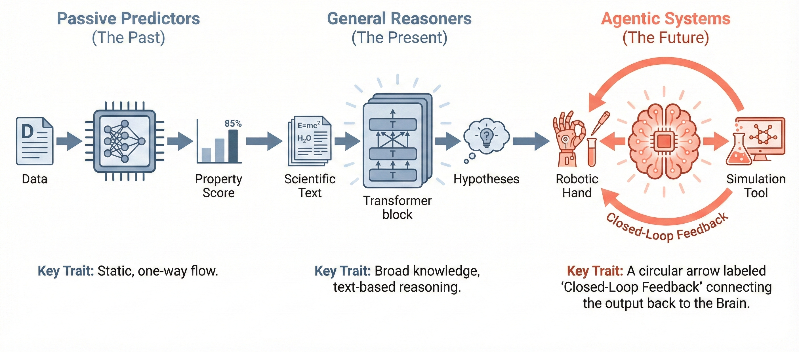
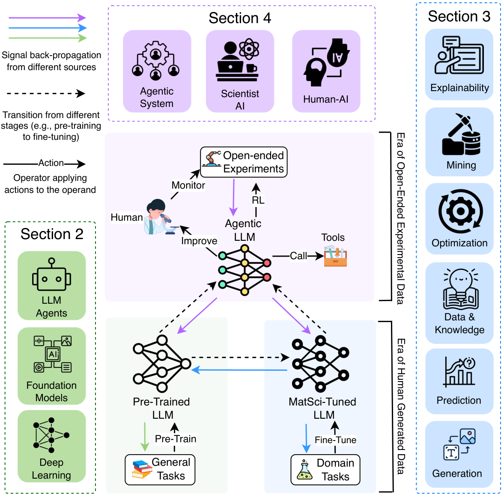
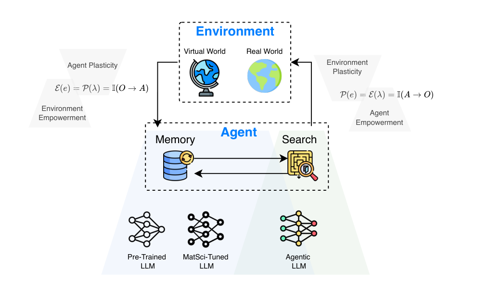

面向材料科学的 Agentic Intelligence：一篇以「pipeline-centric」为核心视角的综述
Towards Agentic Intelligence for Materials Science
★领域背景速补（给只懂 LLM 的读者）
如果你熟悉 LLM、但对材料科学（materials science）几乎是空白，这一节先把读懂全文所需的背景一次补齐。核心只有一句话：材料发现本质上是「要真的去做实验」的科学，这跟 LLM 圈「在数据集上跑一跑就能验证」的世界很不一样——也正是为什么 agent（能调工具、能控机器人、能跑长程闭环）在这里特别有价值。
材料发现的链条，以及为什么它慢
找到一种有用的新材料，通常要走完一条长链条：计算预测（computational prediction，先在电脑里算出哪些候选可能稳定 / 有想要的性质）→ 合成（synthesis，真的把它在实验室里做出来）→ 表征（characterization，用各种仪器测它到底是什么结构、有什么性质）→ 优化（optimization，调配方 / 工艺参数让性能更好）。每一环都很费时间，而且大部分环节必须真做物理实验——合成一炉可能要几小时到几天，表征要排队上仪器，优化又要把上面这套重复几十上百轮。类比 LLM：这就像你每改一次 prompt 都得等三天才能看到一次 eval 结果，且每次 eval 还要花真金白银的试剂和机时。这是材料界一切「加速」诉求的根源。
DFT：从量子力学第一性原理算性质
DFT（density functional theory，密度泛函理论）是材料 / 化学界算性质的「标准答案级」工具：它从量子力学的第一性原理（first-principles，即只靠基本物理定律、不靠经验拟合）出发，算出一个材料的能量、稳定性、电子结构等性质。它的特点是准，但贵——算一个稍大的体系可能要在超算上跑很久。类比 LLM：DFT 像一个又准又慢又烧钱的「reference 模型」，你信它的答案，但没法对每个候选都跑一遍。
MLIP：材料界的「基础模型」之一
既然 DFT 太贵，自然的想法是用机器学习去拟合 DFT：这就是 MLIP（machine-learning interatomic potential，机器学习原子间势）/ interatomic potential（势函数，描述原子之间作用力的函数）。它学会了 DFT 的输入输出关系后，能把分子动力学模拟（molecular dynamics，模拟原子随时间怎么运动）加速几个数量级，同时精度接近 DFT。类比 LLM：MLIP 之于 DFT，很像「蒸馏出来的快模型」之于又慢又贵的教师模型；而像 GNoME、M3GNet、NequIP、CHGNet 这类在海量材料数据上预训练、能泛化到没见过的成分的模型，就是材料界自己的「foundation model（基础模型）」之一。
self-driving lab：AI 当大脑，机器人当手
self-driving lab（自驱实验室，简称 SDL）是这篇综述的核心场景：让 LLM / AI 当大脑负责决策（设计配方、规划实验、读结果决定下一步），让机器人当手负责实操（移液、加热、上仪器表征），自动跑完「设计 → 合成 → 表征 → 优化」的整个闭环（closed loop），人几乎不用插手。文中反复出现的 A-Lab 就是代表：机器人 17 天连轴转合成材料。类比 LLM：这相当于把 agent loop 从「调用 API、跑代码」延伸到了「真实世界里动手做物理实验」，反馈信号不再是 eval 分数，而是「这炉到底有没有合成出来」。
从「单点预测模型」到「会跑科研闭环的 agent」
这正是全文的主线。过去十年材料 AI 多是单点预测模型（point-prediction model）：给一个结构、预测一个性质，做完就完了，彼此孤立、不闭环。这篇综述主张往 foundation model / agentic（智能体化）方向走——让一个 agent 能调用模拟器（如 DFT、MLIP）、操控机器人、查数据库，并把下游「实验到底成没成功」的结果反向用来改进上游的每一环，自己把科研闭环跑起来。类比 LLM：就是从「一个个专用的 fine-tuned 分类 / 回归头」，升级到「一个会用工具、能长程规划、按最终目标自我迭代的 agent」。
会反复出现的几个数据库
材料界有几个公共大数据库，是 agent 取数据 / 找候选的「弹药库」，文中会频繁提到：Materials Project（伯克利主导，收录海量用 DFT 算过的材料及其性质）、OQMD（Open Quantum Materials Database，开放量子材料数据库，同样以 DFT 计算性质为主）、ICSD（Inorganic Crystal Structure Database，无机晶体结构数据库，收录实验上已确认的晶体结构）。一句话：它们是「已知 + 预测材料」的大型结构化知识库，类比 LLM 世界的大规模预训练 / 检索语料。
①开源贡献 Open-source Artifacts
这是一篇 综述 / position survey，其核心产出是概念框架、分类法（taxonomy）与文献梳理，而非可运行的代码或模型。论文正文与官方 e-print source 中没有给出作者自己的配套 GitHub / awesome-list / 数据集或 benchmark；文中出现的 GitHub 链接（如 MatSciBERT、AutoGPT、LangChain 等）均为被引用的他人工作，不是本综述的开源物。因此「是否开源」如实标注为无。
| 类型 | 是否开源 | 内容 / 说明 |
|---|---|---|
| 代码 Code | ✘ | 综述无配套代码仓库（正文与 source 中未给出官方 repo）。 |
| 模型权重 Weights | — | 无（不训练模型）。 |
| 数据集 Dataset | — | 无（不发布新数据集；文中梳理 Materials Project、OQMD、OPTIMADE、LeMatTraj、TDCM25、MaCBench 等他人资源）。 |
| 环境 / Benchmark | — | 无（讨论 CrystalGym、MatSci-NLP、MatVQA、MaCBench 等现有 benchmark，但不发布新 harness）。 |
| 论文 PDF | ✔ | arXiv 公开（abs & e-print source 含矢量图）：arxiv.org/abs/2602.00169。 |
github / huggingface / project / awesome / code is available 等关键词；命中的均为被引文献的链接，未发现作者本人为本综述发布的代码或资源。综述类论文无代码属正常现象，特此如实标注。
②研究动机与定位 Motivation & Positioning
背景：为什么需要 agentic intelligence？
材料科学的核心难题是：要把跨文献、跨尺度、跨实验设置的海量知识整合起来，最终走向新型功能材料的自主发现。过去十多年里，machine learning（先是 SVM / random forest 等特征工程方法，后是 deep learning、GNN，再到 LLM）在材料领域多以一种静态、任务隔离的范式运作：在精心整理的数据集上训练，做某个固定任务——预测某个性质、抽取某类实体。预训练 LLM 擅长理解文本、挖掘化学符号与实验协议，instruction-tuning 进一步贴合人类工作流，但只要没有 closed-loop 反馈与 long-horizon 目标，它们就始终停留在“被动响应”的层面。
作者由此给出全文的中心论断：迈向自主发现的瓶颈不在于模型不够强，而在于缺一个把这些孤立能力连接到“真实实验结果”的整合框架。他们借鉴 RL 中的「reward is enough」假说，提出一个端到端的 discovery reward——以“成功识别并验证出新颖、有用的材料”为奖励，原则上足以塑造整条 AI4MS 流水线朝最终科学目标对齐。这与传统“phase-centric / reactive”方法形成对照：后者把模型能力锁死在工作流的单个阶段，难以跨动态、多模态、终身学习的工作流自适应。

核心切入点：pipeline-centric 视角
本综述与已有综述（Van et al.、Madika et al.、Pyzer-Knapp et al.、Peivaste et al.、Jiang et al.、Lei et al. 等）的关键差异，在 Table 1 中被概括为唯一同时做到「Broad（材料域广 + AI 方法广）」且「Discovery-Oriented（以闭环验证 / outcome-driven 目标为先）」的“End-to-end & pipeline-centric perspective”。传统 deep learning 的「end-to-end」指：单个标量 loss 在最终任务输出处定义，反向传播穿过所有可微分组件，联合优化表示学习、中间模块与预测头。本文把这个概念从“一张神经网络”扩展到“整条材料发现流水线”——pre-training、domain adaptation、tool use、experiment planning、autonomous labs 都不再是固定阶段，而是被来自真实发现结果的 credit assignment 串联起来的耦合、可训练组件。
作者用三个 guiding question 组织全文：
- Q1（Evolution of Agency）：通用 ML 模型如何从被动处理器演化为 agentic 系统？（→ Section 2，AI/LLM 进展）
- Q2（Limitations of Phase-Centric Approaches）：现有 AI4MS 系统即便在材料 benchmark 上得分很高，为何仍不足以支撑自主材料发现？（→ Section 3，reactive 任务）
- Q3（The End-to-End Gap）：已发展出哪些能力，又如何弥合现有系统与端到端自主发现流水线之间在 capability / optimization / governance 上的差距？（→ Section 4，agentic systems）
核心贡献
- 提出一个统一的 pipeline-centric 框架（图见下一节）：把语料构建、预训练、领域适配、指令微调与 goal-conditioned agent 统一成一个由真实实验奖励驱动、可反向 credit assignment 的端到端系统；明确主张“better pre-training”应由 downstream discovery 行为定义（如能规划可行合成、正确处理 hazard），而非 generic 语言 benchmark。
- 建立AI ↔ 材料科学的“共同参照系”：对齐术语、评测与工作流阶段，并从两个视角系统梳理——AI 视角（LLM 在 pattern recognition、predictive analytics、文献挖掘、表征、性质预测上的强项）与材料视角（材料设计、过程优化、借 DFT / 机器人实验加速计算工作流）。
- 给出三套分层 taxonomy（AI/LLM 进展、reactive 任务、agentic 系统）与一张 technology tree，把 SciBERT、MatSciBERT、ChemCrow、Coscientist、A-Lab、GNoME、MatAgent 等代表系统归入各能力维度，对比 passive/reactive 与 agentic 设计。
- 提出可操作的机制设想：用 influence functions 做 backward credit assignment（识别哪些预训练 / MatSci 语料最支持或最损害发现能力），并以 memory + search（图见 ⑤）与 empowerment–plasticity 视角统一描述安全、自适应与终身学习。
③分类法与框架 Taxonomy & Framework
综述的“方法”即其组织框架与分类法。整体结构由 Fig. 1 的 pipeline 串起：通用预训练 LLM → MatSci-tuned LLM → agentic LLM，三层互相反馈；上层 agentic LLM 在 open-ended experiments 中调用工具（DFT、机器人、数据库），把反馈信号沿不同来源的彩色箭头回灌到下层模型与各任务模块。下面先给总览图，再逐维度展开并列出代表系统。

3.1 Section 2：从被动处理器到 agentic 系统（回答 Q1）
作者把 AI 演化分为四阶段，恰好对应 pipeline：(1) 静态数据上的预测模型 → (2) 作为可编程先验的 foundation models → (3) 用于目标塑造与可控性的 post-training → (4) 支持 tool use 与 long-horizon reward 的 agentic 系统。沿途的关键里程碑包括：早期 ML（SVM / random forest / 聚类 / PCA / RL 如 DQN、PPO）建立结构–性质关联；deep learning（AlexNet、GAN、VAE、LSTM）让“学习到的表示”取代手工 descriptor；Transformer 的 self-attention 重塑序列建模（适配 SMILES 与科学文献），BERT / GPT-3 引爆规模化；foundation models（SciBERT 在 114 万篇论文上训练、AlphaFold 用注意力解蛋白结构）把通用先验适配到科学语料；CoT、memory-augmentation、scaling law 强化推理与知识 grounding；多模态（CLIP、BLIP、Flamingo 及材料专用的 MatterChat、MicroscopyGPT、MolVision、PolyLLMem）融合文本 / 图像 / 结构；并出现 Transformer 之外的高效架构（S4、Mamba）以处理超长分子串 / 仿真轨迹。最后是 agentic 转向：从「Era of Human Data」到「Era of Experience」，LLM 借 retrieval、code execution / function calling、browser、database API 构成 agent loop（Toolformer、AutoGPT、LangChain），并迎来 2025 下半年一批具备思考与具身行动的 agent（Claude Sonnet、Gemini Robotics 1.5、NVIDIA Cosmos 等）。
3.2 Section 3：reactive 能力维度逐一拆解（回答 Q2）
这是综述对“传统 AI4MS”最系统的拆解。作者反复提醒：在 isolated task 上的 benchmark 表现，脱离端到端发现闭环时，可能是对真实发现结果有误导性的 proxy——synthesis 可行性、安全约束、实验验证才最终决定成败。各维度与代表工作如下表（“干什么”一列为该维度在发现流水线中的作用）。
| 能力维度 | 子方向 / 代表工作 | 在发现流水线中干什么 |
|---|---|---|
| Prediction 预测 | 回归：CrystalTransformer、MatInFormer、Roost、ElaTBot（弹性张量）；分类：缺陷分类 / AFM 图像对话式诊断（ChemCrow、Boiko 等）；进阶：hybrid GNN-Transformer、MTENCODER（多任务）、uncertainty quantification（aleatoric / epistemic） | 从结构 / 成分 / 文本预测电子、力学、热力学稳定性、热电等连续性质或类别；UQ 还充当闭环里的决策变量（acquisition / stopping）。 |
| Mining 挖掘 | 信息抽取：ChemDataExtractor、MatSciBERT、ChatExtract、MaTableGPT；知识图谱：MatKG、Prein 等前驱体排序；数据库自动化：MatNexus、MatScIE、CALMS | 把文献中的合成参数、性质数据结构化，决定“下游什么能被训练”；逐渐从一次性解析转向 agentic extraction pipeline。 |
| Generation 生成 | 结构生成：CrystalLLM（生成 CIF）、Gruver 等（LLaMA-2 直出晶体，比 CDVAE 快近一倍）、MATLLMSEARCH（免微调的 agentic 生成器 + 进化搜索）；逆向设计：MatAgent（LLM+diffusion+性质预测器迭代）、Deep dreaming（MOF linker）、MatDesINNe、PolyTAO；合成路线：A-Lab、graph-based pathfinding | 提出新颖、稳定、可合成的候选结构 / 成分 / 合成路径；趋势是从“生成采样”走向“search-with-verification”。 |
| Optimization & Verification | 过程优化：Ada（自驱 Pd 薄膜）、BAX、SPINBOT（钙钛矿）、ARES（碳纳米管 8 倍增速）；仿真验证：多保真 GP（TVR-EI）、GNoME（GNN+DFT 大规模发现）、CAMP（Cartesian MLIP）；闭环实验室：mobile robotic chemist、Artificial Chemist、CAMEO、A-Lab（NLP 提配方 + ARROWS 主动学习）、Coscientist（GPT-4 编排化学实验） | 用 Bayesian optimization / active learning / RL 在真实或仿真中闭环优化；MLIP 降低验证成本，扩大仿真驱动闭环的可行视野。 |
| Data & Knowledge | 数据稀缺/异构：MatMiner、Robocrystallographer、OPTIMADE（统一 API）、FAIR、LeMatTraj（~1.2 亿原子构型）；数据增强、多保真学习（MODNet）、few-shot（Meta-MGNN）；知识整合：PINNs、ElemNet/CrabNet/MEGNet/M3GNet/NequIP/Allegro、知识图谱（KCL/KANO）、预训练（Mat2Vec、BatteryBERT、UniMat、MELT）；多模态：MultiMat、MatBind、MatMCL、DiffractGPT、mCLM、MatVQA、MaCBench | 缓解材料数据“又少又杂”的根本约束；多模态被视作“闭环前提”——每个阶段产出不同模态需联合解读才能决策。 |
| Explainability 可解释性 | 三大轴：physical validity / faithfulness / stability。sparse & closed-form（SISSO 家族、符号回归）；attention & graph explainers（CrabNet、GANN、CrysXPP、谱归因）；physics-informed（等变 GNN、守恒律约束） | 在高风险真实实验中，解释可作为“门控高风险动作”的验证物；physics-informed 还能当 closed-loop 的可行性护栏。 |
3.3 Section 4：agentic systems 与 Scientist AI（回答 Q3）
从形式化看，agentic 系统把材料状态记为 descriptor 向量 $x\in\mathbb{R}^n$，可测性质 $y=f(x)$ 经实验或仿真获得。传统监督学习只想逼近 $f$；而 agentic 系统定义一个控制策略 $\pi_\theta(a\,|\,s)$，依据系统状态 $s$（历史实验结果、模型不确定度）选择动作 $a$（合成参数、成分提案），以最大化长程目标
$$R=\mathbb{E}\!\left[\textstyle\sum_t \gamma^t r_t\right],$$其中 reward 通常在实验性能、资源成本与安全之间权衡，而不只看预测精度——RL 因此成为自主实验的自然形式。但状态 / 动作空间高度非凸、探索昂贵，且嵌入热力学稳定性、可合成性等科学约束，故 agentic 系统的成败取决于 UQ、active learning 与 surrogate modeling 的整合，这也正是“完整 agentic pipeline”区别于“简单 Bayesian optimization 循环”之处。该节的子结构：
- Contemporary Agentic Systems（4.1）：从 passive prediction（CGCNN、ALIGNN、CHGNet）到 active cognition；Self-Driving Labs（SDL）闭合“材料环”——Design&selection → Execution → Evaluation → Evolution（在更新数据上重训）；多智能体层级把发现拆为 Predictor / Planner / Verifier 等专职 agent（如 MatExpert），经标准协议通信、共享 memory，便于模块化扩展与可解释。还讨论 safe exploration（UCB / Thompson sampling、ensemble 的 epistemic uncertainty）、simulation–experiment hybrid loop（DeepMD、CHGNet 当“虚拟实验室”，呼应 digital twins）与未来的“科学多智能体生态”。
- Scientist AI（4.2）：超越数据拟合走向科学推理。四个子能力——Hypothesis Generation（BO / active learning + 生成模型 + LLM 提出可检验假设）、Scientific Critical Thinking（System 1 vs System 2 慢思考、反事实模拟、为冲突证据加权）、Experiment & Simulation Planning（不确定性下的决策、ChemCrow 等调度工具与机器人）、Interpretation & Hypothesis Revision（LIME / SHAP 归因、SISSO / 符号回归给出可读假设、AI Feynman 式方程发现）。作者坦言：当前系统“很少显式表述可证伪假设”，因果 / 机理推理有限，跨模态先验整合仍脆弱。
- Human–AI Collaboration（4.3）：自然语言界面（MatGPT 查询晶体学库、给实验建议）、scientific collaboration network（节点是专职 agent + 人类监督）、trust & accountability（AutoLabs 的 critic agent 复核安全与可行性、GIFTERS 的可信原则）。随着自主性提升，人类应转向更高层的管理、伦理监督与概念创新，并需要可解释界面做 trust calibration（避免过度或不足信任）。
④现状与评测 State of the Art & Evaluation
作为综述，本文没有自己跑实验，而是评估“整个领域现在能做到什么程度、benchmark 现状如何”。这里据原文如实归纳，不臆造数字。
已被验证的“能做到”
- 大规模仿真驱动发现：GNoME 将 GNN 与 DFT 结合做大规模材料探索；CAMP 作为下一代 Cartesian-space MLIP 在闭环仿真中系统性提升、降低验证成本。
- 真实闭环自驱实验室：A-Lab 用文献训练的 NLP 模型提初始配方、ARROWS 主动学习优化，失败时用 ab initio 反应能预测替代路径；CAMEO（贝叶斯主动学习探索成分–相–性质关系）；Ada（自主优化 Pd 薄膜的低温高导配方并在量产中验证）；ARES 把碳纳米管生长速率提升约 8 倍；mobile robotic chemist 在十变量空间搜索更优光催化剂。
- LLM 编排实验：Coscientist 用 GPT-4 agent 编排化学实验；亦有系统让 LLM 直接写可执行脚本（Python / LabVIEW）控制仪器，并分析结果、改进后续测量条件，形成“思考–执行”闭环。
- agentic 生成与逆向设计：MATLLMSEARCH 免微调即可作 agentic 晶体生成器（LLaMA-3.1 + 进化搜索 + 物理评估）；MatAgent 用 LLM 提成分、性质预测器反馈迭代精化。
benchmark 现状：碎片化且偏离“发现结果”
| 资源 / Benchmark | 考察什么 | 作者点出的局限 |
|---|---|---|
| Matbench / 各性质数据集 | property prediction 精度 | 固定预测任务、孤立计算单元，是发现结果的 proxy。 |
| MatSci-NLP | 合成动作抽取等文本任务 | 只覆盖文本任务，无多模态推理 / 跨模态泛化的统一标准。 |
| MatVQA / MaCBench / MOFs-KG (KGQA) | 多模态 QA、知识图谱问答 | 多偏向识别与跨模态对齐，对多步科学推理 / 闭环决策只部分评估。 |
| CrystalGym | 给 RL 研究者熟悉的 API | 能否迁移到真实实验环境仍不清楚。 |
| TDCM25 / Takeda 等多模态集 | 温变晶体的结构 / 图像 / 文本对齐 | 缺乏可互操作的公共 metadata / ontology，跨模态难复现。 |
作者的总体判断是：现有计算材料发现的评测大多聚焦固定预测任务与孤立计算环节，忽略了真实科学发现固有的迭代、探索乃至偶然（serendipity）的本性。即便像 CrystalGym 这样给出 RL 友好接口，其表现能否转化到真实实验仍是问号。因此“跑分高”与“真实实验影响”之间存在系统性 gap，呼吁建立可被真实数据持续更新的模块化动态 AI4MatSci 测试床，并以“成功识别并验证新功能材料”作为主奖励，而非 surrogate benchmark。
⑤洞见与挑战 Insights, Challenges & Outlook

可迁移的方法论判断
- 用 influence functions 做 backward credit assignment：以可扩展的逆 Hessian 近似估计“某条训练样本上 / 下权重”对下游发现行为（如能否提出可合成候选、安全处理危险化学）的影响，从而把“数据选择”从一次性 curation 变成目标驱动的超参数，决定哪些通用 / MatSci 语料该放大、衰减或剔除。
- “先虚拟后真实”的训练范式 + democratize lab automation：先在仿真世界训练再迁移到真实环境续训；但要清醒——agent 学不到 simulator 之外的知识，故仿真 agent 与真实 agent 之间存在性能 gap，而真实训练又极其昂贵。一个被低估的瓶颈是实验室自动化的可及性：自驱实验室仍昂贵、部署慢、对材料 + 机械 + 机器人 + 软件多重专业高度依赖，把现有自动化实验室适配到新目标仍非平凡，限制了真实反馈的规模与多样性。
- 共享 agent / agent 群体跨虚实与上游统一 memory：不同于既有 digital-twin，作者主张用单一共享 agent 或具备 memory 的 agent 群体，覆盖仿真、真实实验乃至上游预 / 中训练，整条流水线共享一个可被真实奖励更新的 memory。
公认挑战
- 可复现与自动表征判定：多模态资源缺乏可互操作 ontology，跨模态结果难复现；XRD 多相定量、3D 重建、缺乏标注等问题尚未解决——而“自动判定一次合成/表征是否成功”正是闭环可信度的关键环节（亦与 A-Lab 表征判定可靠性的社区争议相呼应）。
- 数据稀缺与异构：MatSci 领域数据比通用预训练语料小若干数量级，即便数据增强 / 多保真 / few-shot 也只能部分缓解；这意味着微调模型的多数行为其实继承自预训练阶段，仅靠有限 MatSci 微调难以可靠诱发期望行为。
- 安全与治理：增大上游可塑性（plasticity）会有侵蚀基础安全属性的风险；MatSci 任务无法覆盖通用预训练语料里编码的全部规范约束。Bengio 等警示 AI 与生命科学交汇的 biosecurity 风险——LLM agent 驱动的材料发现与自主实验室同样可能降低滥用门槛（设计危险性质材料、获取危险合成路线），故必须发展可信、安全、safety-aware 的 LLM agent。
- 闭环可信度：LLM planner 仍受 hallucination、不确定性标定差、难保证遵守安全 / 物理规则所限；Scientist AI 很少显式表述可证伪假设，因果推理有限。
未来方向（作者的 roadmap）
从 foundation models 走向自主、safety-aware 的 LLM agent，满足真实的性能、成本、可靠性标准。具体包括：把预训练嵌入“实验奖励反塑上游”的反馈回路；探索更适合 MatSci 的 RL 规则（受“自动发现优于人工设计的 SOTA RL 规则”启发）；建设可被真实数据持续更新的模块化动态测试床；用 empowerment–plasticity 框架设计高度解耦的 agent 与对应环境，在最大化产出的同时最小化风险。作者也引用“小语言模型对 agentic 任务可能足够且更经济”的观点，把“压缩 LLM 为 SLM”也视为由最终 RL 奖励驱动的一种上游修改。
与相关工作的关系
相比 Van et al.（任务分类法）、Madika et al.（physics-informed、responsible AI，但不含 LLM）、Pyzer-Knapp et al.（聚焦晶体 / 分子的 foundation model）、Jiang et al.（文献挖掘）、Lei et al.（LLM 增强人类研究者）等近期综述，本文的差异化在 Table 1 中被明确为：唯一同时“材料域广 + AI 方法广 + discovery-oriented”，并以 end-to-end / pipeline-centric 为统一视角。它没有直接卷入 LeCun（“RL 只是蛋糕上的樱桃”）与 Silver/Sutton（智能应根植于与环境的交互）的宏观之争，而是落到材料科学“发现本质上是交互式的、假设须经仿真 / 实验检验”的具体诉求，论证 agentic 系统是更恰当的设计选择。